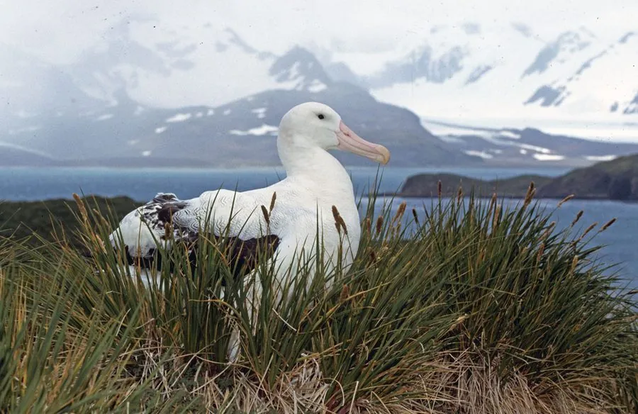

鸟类 · 动物界
漂泊信天翁 Diomedea exulans

翼展可达 3.5 米的巨型海鸟，能借海风在南大洋上空滑翔数小时不拍翅，一生大部分时间在海上漂泊。
- 分类
- 门脊索动物门纲鸟纲目鹱形目科信天翁科属信天翁属
- 栖息环境
- 开阔的南大洋与南极周边海域，繁殖期集群于偏远海岛
- 地理分布
- 南大洋环流区，繁殖于南乔治亚、克罗泽、凯尔盖朗等亚南极岛屿
- 保护级别
- IUCN 易危（VU）；南极周边物种，中国无繁殖种群
物种志
漂泊信天翁体长 107–135 cm，翼展 2.5–3.5 m，是翼展最大的鸟类，体重 6–12 kg。成鸟全身洁白，翅膀尖端为黑色，颈后和头部略带淡淡的粉色；幼鸟则呈巧克力褐色，随着成长逐渐变白。它的喙粗大带钩，脚蹼宽大，翅膀细长而狭窄，非常适合长时间滑翔。
漂泊信天翁环游南大洋，繁殖于南乔治亚、克罗泽、凯尔盖朗等亚南极岛屿，其余时间几乎都在海面上空滑翔。它们借助海面风速的梯度变化，能在不拍动翅膀的情况下连续飞行数小时，以鱼、乌贼、磷虾和腐肉为食，也常跟随渔船觅食。漂泊信天翁终生配对，每隔一年繁殖一次，繁殖前会进行复杂的鞠躬、点头和展翅“舞蹈”；每窝只产 1 枚卵，孵化约 78–80 天，育雏期长达 9 个月。延绳钓渔业误捕是它们面临的最大威胁，目前被列为易危物种。
形态与习性
- 食性鱼、乌贼、磷虾和腐肉，常跟随渔船觅食
- 体长107–135 cm
- 翼展2.5–3.5 m，是翼展最大的鸟类
- 体重6–12 kg
- 繁殖每窝 1 枚卵，孵化约 78–80 天，育雏约 9 个月
- 寿命可活 60 年以上
- 滑翔可连续滑翔数小时而不拍动翅膀
趣味知识
- 漂泊信天翁的翼展可达 3.5 m，是现存翼展最大的鸟类。
- 它借助海面风速梯度滑翔，能在不拍翅的情况下连续飞行数小时。
- 信天翁终生配对，繁殖前会进行复杂的鞠躬、点头和展翅“舞蹈”。
- 延绳钓渔业误捕是漂泊信天翁面临的最大威胁，每年有大量个体因此死亡。